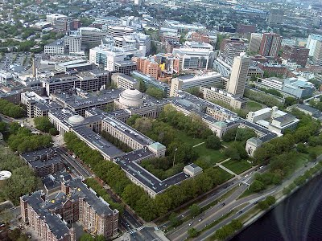
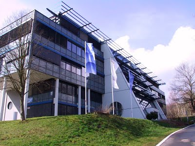
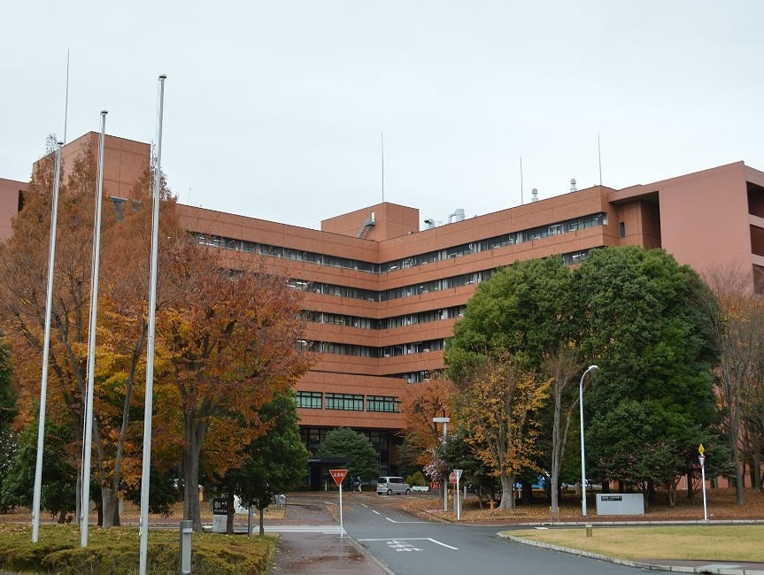
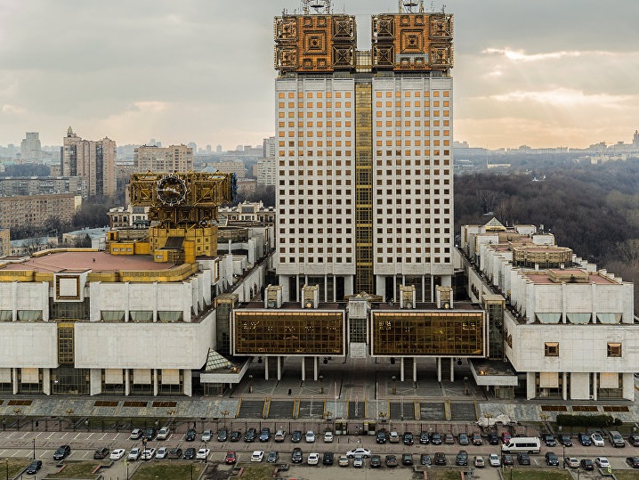

Наиболее крупные научные и исследовательские центры в области искусственного интеллекта:
США
Лаборатория ИИ,
Массачусетский технологический
институт

Германия
Немецкий исследовательский
центр по искусственному
интеллекту

Япония
Национальный институт
современной
промышленной
науки и технологии (AIST)

Россия
Научный совет по
методологии искусственного
интеллекта РАН

Для того чтобы разработки в области робототехники для оборонной промышленности шли по оптимальному графику, по указу президента от 16 декабря 2015 года N 623 в России был создан Национальный центр развития технологий и базовых элементов робототехники. Финансирование данного центра осуществляется Фондом перспективных исследований.
Как мы видим, будущее искусственного интеллекта уже совсем рядом. Текущие достижения показывают, что интеллектуальность разрабатываемых машин растёт с каждым годом. И пусть сами исследования заняли больше двух десятилетий, о которых когда-то говорил Тьюринг, сегодня человек стоит на пороге принципиально новых открытий в этой области, которые позволят реализовать его давнюю мечту.